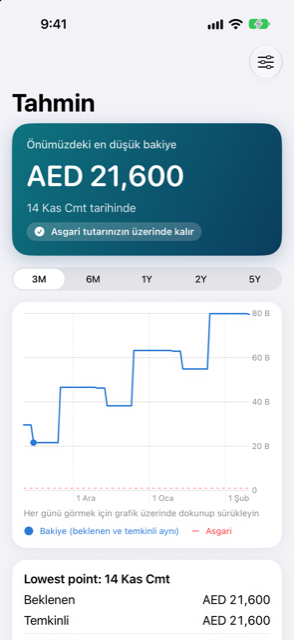

Kılavuz › Planlama
Tahmin ve güvenli harcama
Damla'nın güvenli harcama tutarını nasıl hesapladığı ve grafiğin nasıl okunacağı.
Tahmin, kitaplarınızda zaten olanlardan yola çıkarak bakiyenizi önünüzdeki günler için gün gün gösterir. Güvenli harcama, bakiyenizin gelecek dönem boyunca herhangi bir anda minimumunuzun altına düşmemesi için bugün en fazla harcayabileceğiniz tutardır.

Ne zaman kullanılır
- Bakiyenizin ne kadar ve ne zaman düştüğünü, seçtiğiniz aralıkta görmek için: 3M, 6M, 1Y, 2Y ya da 5Y.
- Bugün "Paranız kısa kalabilir" derken, bunun hangi günde olacağını bulmak için.
- Bir geliri, bir faturayı ya da bir vade tarihini değiştirdikten sonra, haftaların artık nasıl göründüğünü görmek için.
Adım adım
- Tahmin'i Bugün'ün üstündeki turkuaz kartın grafikinden açın.
- Üstteki seçiciyle bir aralık seçin; grafik bu aralık için bakiyenizi çizer, minimumunuz ise kesikli kırmızı bir çizgidir.
- Noktayı hareket ettirmek için grafik boyunca dokunun ve sürükleyin. Küçük bir kutu günün tarihini, bakiyesini ve hareketlerini gösterir; altındaki kart bunları toplamlarıyla birlikte Gelen para ve Giden para olarak listeler.
- Üstteki pankartı okuyun: bakiye minimumunuzun altına düşerse bunun ne zaman olacağını, ya da minimumunuzun üzerinde kaldığını gösterir.
- Bir değişikliği denemek için sağ üstteki Ya olursa'ya dokunun: harcamak, para almak, sürekli bir ödemeyi ya da planı atlamak ya da bir taksit planı eklemek. Güvenli harcamaya ve en düşük noktaya etkisini görürsünüz. Kitaplarınıza hiçbir şey kaydedilmez.
Sayı nasıl hesaplanır
- Plan, Gelir ve faturalardaki gelirler ve faturalar kendi takvimlerine göre sayılır; kaydettikleriniz ya da attıklarınız tekrar sayılmaz.
- Kart faturaları: kesilmiş bir ekstre gerçek tutarını vade tarihinde kullanır. Henüz kesilmemiş bir ekstre, kartın tipik bir ayını kullanır — son aylarının ortalaması, Ayarlar'daki Beklenen kart harcaması ayarı ya da kartın Ayrıntıları'nda verdiğiniz sayı. Kesilmiş bir ekstrenin gerçek tutarı devralır. Her kartın sayısı, Bu tahminin içinde neler var altındaki Kartlar grubunda listelenir.
- Taksit planları, aşamalı ödemeler, bildirimlerle duyurulan faturalar ve kişilere yapılan geri ödemeler kendi tarihlerinde sayılır.
- Banka hesaplarınızdan günlük harcamalar tahmin edilmez; tamponunuz onları karşılar.
- Güvenli harcama, en az Önden bak ayarının gösterdiği kadar ileriye bakar ve sonraki gelirinizi de bu döneme sayar; böylece maaştan hemen sonra gelen büyük bir ödeme sayıyı düşürür. Sayı, o dönemdeki en düşük bakiye eksi minimumdur.
Hesaplanmış bir örnek
Hayali bir hane, 9 Kasım. Para birimi AED, minimum bakiye AED 1,000, önden bakış en az 30 gün.
| Neler sayılır | Değer |
|---|---|
| Günlük hesap (banka) | Bugün AED 29,600 |
| Birikimler | AED 40,000, tahminde yok olarak işaretli |
| İnternet, her ayın 12'sinde | AED 350 çıkış |
| Kira, her ayın 16'sında | AED 8,000 çıkış |
| Maaş, her ayın 27'sinde | AED 25,000 giriş |
Bugün gösterir: bugünkü bakiye AED 29,600, en düşük nokta Pzt 16 Kasım'da AED 21,250, güvenli harcama AED 20,250 — en düşük nokta eksi AED 1,000 minimum. Pencere 9 Kasım'dan 9 Aralık'a sürer, Cum 27 Kasım'daki maaşı geçer; maaştan sonra gelenler de sayılır. Birikimler bu sayılarda yoktur.
Gün gün bakiye (beklenen çizgi; temkinli burada aynıdır, çünkü her kalem sabittir):
| Tarih | Bakiye | Neden |
|---|---|---|
| 9–11 Kasım | AED 29,600 | |
| 12 Kasım | AED 29,250 | İnternet 350 |
| 16 Kasım | AED 21,250 | Kira 8,000 (en düşük nokta) |
| 27 Kasım | AED 46,250 | Maaş 25,000 |
Tek seferlik ödeme sınırları (tek ödeme, minimumu koruyarak):
| Ödeme tarihi | En fazla ödeyebileceğiniz | Rahat tutar |
|---|---|---|
| 10 Kasım, 13 Kasım ya da 19 Kasım | AED 20,000 | AED 16,000 |
| 29 Kasım (maaştan sonra) | AED 36,500 | AED 29,500 |
Maaştan önce, ilk satırdaki tutarlara kadar bir ödeme bakiyeyi hiçbir zaman AED 1,000 minimumun altına düşürmez. Maaş gününden sonra sınır daha büyüktür.
Bilmekte fayda var
İlgili
Anlaşılmayan ya da eksik bir şey mi var? support@raveniq.ai adresine yazın ve hangi sayfa olduğunu belirtin.